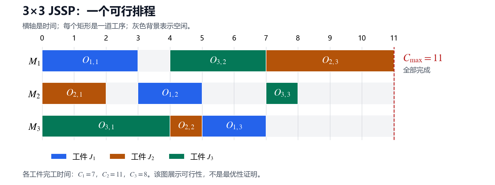

第 1 节：JSSP 的问题定义与手算排程¶
状态：第一版（符号与格式修订），待 review。
本节目标：能读懂一个 JSSP 实例，判断排程是否可行，计算最大完工时间，并分清“输入已指定什么”和“算法需要决定什么”。
1.1 从车间里的一件事说起¶
假设车间要加工几个工件。每个工件都要经过多道工序，但不同工件的加工路线可以不同：一个可能先车削再打磨，另一个可能先钻孔再车削。
每道工序已经指定了机器和加工时间。问题在于：多个工件可能需要同一台机器，而机器一次只能加工一个。它们必须排队；一处排队还会影响后续工序能否及时开始。
JSSP（Job Shop Scheduling Problem，作业车间调度问题）就是在工艺顺序与机器容量约束下，为这些工序安排加工时间。 本套笔记先研究最小化最大完工时间的经典版本：希望所有工件尽早全部完成。定义与基本约束参照 OR-Tools 官方教程
这里先区分三个对象：
| 对象 | 含义 | 例子 |
|---|---|---|
| Job，作业/工件 | 一条需要完成的加工任务链 | 工件 \(J_1\) |
| Operation，工序 | job 中的一次具体加工 | \(J_1\) 的第二道工序 \(O_{1,2}\) |
| Machine，机器 | 执行工序的资源 | 机器 \(M_2\) |
在工厂语境里，一个 job 可以对应工件或加工批次。本笔记把它简化为一条固定工序链，不引入拆批、合批等业务细节。
1.2 先约定我们研究的模型¶
以下假设是后续图模型和算法推导的基础：
- 所有 job 在时间 0 已知且可投入加工；每个 job 的后续工序仍要等待前序完成。
- 每道工序的机器已指定，加工时间已知且为正。
- 每个 job 的工序必须按给定顺序执行，不能跳过。
- 一台机器同一时刻最多加工一道工序。
- 一道工序一旦开始，就连续加工到结束。这叫 不可抢占（non-preemptive）。
- 不同 job 可以在不同机器上并行加工。前一工序完成后，允许等待，也允许立刻开始下一道。
- 机器始终可用；本模型不计运输、换型、工人、故障和班次约束，允许工序间有等待与机器有空闲。
因此，“机器空着”本身不违反约束；“同一机器上两道工序同时加工”才违反容量约束。是不是好的排程，需要另外看目标函数。
经典基准中常见每个 job 各访问每台机器一次的 \(n\times m\) 实例。本例也采用这种形式。更一般的 job shop 可以有不同的工序数或重复访问机器；固定工艺顺序、指定机器和机器互斥 才是这里要掌握的核心。
1.3 一个贯穿后续章节的 3×3 实例¶
用时间单位表示加工时长，可以把一个单位理解为一分钟。本例是为讲解自设的实例，不是某个标准 benchmark。
| Job | 第一道工序 | 第二道工序 | 第三道工序 |
|---|---|---|---|
| \(J_1\) | \(O_{1,1}\)：\(M_1\)，3 | \(O_{1,2}\)：\(M_2\)，2 | \(O_{1,3}\)：\(M_3\)，2 |
| \(J_2\) | \(O_{2,1}\)：\(M_2\)，2 | \(O_{2,2}\)：\(M_3\)，1 | \(O_{2,3}\)：\(M_1\)，4 |
| \(J_3\) | \(O_{3,1}\)：\(M_3\)，4 | \(O_{3,2}\)：\(M_1\)，3 | \(O_{3,3}\)：\(M_2\)，1 |
例如 \(J_2\) 的路线为：
下标的含义是：\(O_{j,k}\) 表示第 \(j\) 个 job 的第 \(k\) 道工序。第二个下标表示工序在 job 中的位置，不是机器编号。 例如 \(O_{2,3}\) 是 \(J_2\) 的第三道工序，使用的是 \(M_1\)。
从另一侧看，每台机器要加工的工序为：
| 机器 | 需要在它上面加工的工序 | 加工时间总和 |
|---|---|---|
| \(M_1\) | \(O_{1,1}\)、\(O_{2,3}\)、\(O_{3,2}\) | 3 + 4 + 3 = 10 |
| \(M_2\) | \(O_{1,2}\)、\(O_{2,1}\)、\(O_{3,3}\) | 2 + 2 + 1 = 5 |
| \(M_3\) | \(O_{1,3}\)、\(O_{2,2}\)、\(O_{3,1}\) | 2 + 1 + 4 = 7 |
这张表目前只列“哪些工序要来”，没有规定机器先做谁、后做谁。决定这个顺序，是调度算法的工作。
1.4 哪些是已知数据，哪些是待求的决策？¶
先把几个符号固定下来：
| 符号 | 含义 | 本例中的一个值 |
|---|---|---|
| \(p_{j,k}\) | 工序 \(O_{j,k}\) 的加工时间，输入数据 | \(p_{1,2}=2\) |
| \(\mu_{j,k}\) | 工序 \(O_{j,k}\) 指定的机器，输入数据 | \(\mu_{1,2}=M_2\) |
| \(s_{j,k}\) | 工序 \(O_{j,k}\) 的开始时间，需要安排 | 后面会给出 \(s_{1,2}=3\) |
| \(c_{j,k}\) | 工序 \(O_{j,k}\) 的结束时间，由开始时间决定 | \(c_{1,2}=s_{1,2}+2=5\) |
| \(C_j\) | 整个 job 的完工时间 | \(J_1\) 最后一道工序的结束时间 |
| \(C_{\max}\) | 所有 job 中最晚的完工时间 | 后面的排程得到 11 |
因为加工不能中断，所以：
一旦知道开始时间，结束时间就能算出来。一个完整排程可以写成“每道工序的机器、开始时间和结束时间”的表。
JSSP 中机器已经指定，算法直接需要决定的是开始时间；为了更有效地搜索，后面会改用 每台机器上的工序顺序 来表示决策，再由它计算开始时间。
FJSP 则允许某道工序在多台备选机器上加工，算法还要决定机器分配。把每道工序的备选机器集合限制为单元素，就得到这里的 JSSP 模型。
1.5 两类约束：必须接着做，与必须排队做¶
A. 同一 job 内：工艺顺序不能变¶
\(J_1\) 的 \(O_{1,2}\) 必须等 \(O_{1,1}\) 完成，所以：
如果 \(O_{1,1}\) 在时间 0 开始，\(O_{1,2}\) 最早只能在时间 3 开始。也可以在 4、5 或更晚开始；不等号允许等待。
一般形式是：
这叫 先后约束（precedence constraint）。它来自工艺路线，算法不能为了抢机器而把同一个 job 的第二道工序放到第一道前面。
B. 同一机器上：两道工序不能同时加工¶
\(O_{1,1}\) 和 \(O_{3,2}\) 都要用 \(M_1\)。它们之间必须有一个先后关系：
“或者”非常关键：输入没有给出选哪一项，算法需要决定。对 \(M_1\) 的三道工序都要形成彼此兼容的加工顺序。
工序加工区间使用半开区间 \([s,c)\)。例如 \([0,3)\) 与 \([3,5)\) 可以接在一起，时间 3 处不构成重叠；\([0,3)\) 与 \([2,5)\) 则在 \([2,3)\) 重叠，不能放在同一台机器上。
| 对比 | 工艺先后约束 | 机器互斥约束 |
|---|---|---|
| 来源 | 同一 job 的工艺路线 | 工序争用同一台机器 |
| 谁在前面 | 输入已经确定 | 不同 job 之间通常由算法决定 |
| 如何检查 | 下一道开始不早于前一道结束 | 同机加工区间两两不重叠 |
同时满足这两类约束，还要保证开始时间非负、每道工序都按指定机器和正确时长加工一次，才是可行排程。 开始时间非负写成 \(s_{j,k}\ge 0\)，对应所有 job 在时间 0 可投入的约定。
1.6 手工安排一个可行排程¶
先不讨论哪种算法最好。我们按时间推进，每次只检查：前序是否已经完成？需要的机器是否可用？
| 时刻 | 发生什么、安排什么 | 为什么可以这样做？ |
|---|---|---|
| 0 | \(O_{1,1}\) 在 \(M_1\) 做到 3；\(O_{2,1}\) 在 \(M_2\) 做到 2；\(O_{3,1}\) 在 \(M_3\) 做到 4 | 三者都是首道工序，使用不同机器，可以并行 |
| 2 | \(O_{2,1}\) 完成，但 \(O_{2,2}\) 等到 4 | \(O_{2,2}\) 需要 \(M_3\)，此时 \(M_3\) 还在加工 \(O_{3,1}\) |
| 3 | \(O_{1,1}\) 完成；\(O_{1,2}\) 在 \(M_2\) 从 3 做到 5 | \(J_1\) 的前序已完成，\(M_2\) 也已空闲 |
| 4 | \(O_{3,1}\) 完成；\(O_{2,2}\) 在 \(M_3\) 做到 5；\(O_{3,2}\) 在 \(M_1\) 做到 7 | 两道工序的前序均已完成，两台机器可用 |
| 5 | \(O_{1,2}\)、\(O_{2,2}\) 完成；\(O_{1,3}\) 在 \(M_3\) 做到 7；\(O_{2,3}\) 等到 7 | \(O_{1,3}\) 所需 \(M_3\) 可用；\(O_{2,3}\) 所需 \(M_1\) 仍被 \(O_{3,2}\) 占用 |
| 7 | \(O_{1,3}\)、\(O_{3,2}\) 完成；\(O_{2,3}\) 在 \(M_1\) 做到 11；\(O_{3,3}\) 在 \(M_2\) 做到 8 | \(J_2\)、\(J_3\) 的前序已完成，所需机器均可用 |
| 8 | \(J_3\) 完成 | \(O_{3,3}\) 是 \(J_3\) 的最后一道工序 |
| 11 | \(J_2\) 完成，所有 job 全部完成 | 最后一项未完成的加工是 \(O_{2,3}\) |
把这个过程整理成排程表：
| 工序 | 机器 | 开始 | 结束 | 时长 |
|---|---|---|---|---|
| \(O_{1,1}\) | \(M_1\) | 0 | 3 | 3 |
| \(O_{1,2}\) | \(M_2\) | 3 | 5 | 2 |
| \(O_{1,3}\) | \(M_3\) | 5 | 7 | 2 |
| \(O_{2,1}\) | \(M_2\) | 0 | 2 | 2 |
| \(O_{2,2}\) | \(M_3\) | 4 | 5 | 1 |
| \(O_{2,3}\) | \(M_1\) | 7 | 11 | 4 |
| \(O_{3,1}\) | \(M_3\) | 0 | 4 | 4 |
| \(O_{3,2}\) | \(M_1\) | 4 | 7 | 3 |
| \(O_{3,3}\) | \(M_2\) | 7 | 8 | 1 |
画成甘特图后，每行表示一台机器，矩形的横向长度表示加工时间；同一 job 使用同一种颜色：

也可以用区间快速复习：
| 机器 | 加工与空闲区间 |
|---|---|
| \(M_1\) | \(O_{1,1}:[0,3)\)；空闲 \([3,4)\)；\(O_{3,2}:[4,7)\)；\(O_{2,3}:[7,11)\) |
| \(M_2\) | \(O_{2,1}:[0,2)\)；空闲 \([2,3)\)；\(O_{1,2}:[3,5)\)；空闲 \([5,7)\)；\(O_{3,3}:[7,8)\) |
| \(M_3\) | \(O_{3,1}:[0,4)\)；\(O_{2,2}:[4,5)\)；\(O_{1,3}:[5,7)\) |
验证排程时，换两个方向检查：沿同一个 job 检查工艺顺序，沿同一台机器检查是否重叠。例如 \(J_2\) 的三个区间 \([0,2)\)、\([4,5)\)、\([7,11)\) 按工艺顺序排列，中间虽然等待，但合法；\(M_1\) 的三个区间也互不重叠。
1.7 目标函数：什么时候才算“全部完成”？¶
三个 job 的完工时间分别为：
因此该排程的最大完工时间是：
本模型固定时间原点为 0，研究的目标为：
makespan 看的是最晚完成的 job，不能把所有 job 的完工时间相加。 本例的 \(C_1+C_2+C_3=26\) 是另一个量；所有工序的加工时长总和 \(7+7+8=22\) 也是另一个量。多个机器并行工作，所以它们都不等于这里的 \(C_{\max}\)。
如果把 \(J_1\) 全部做完才做 \(J_2\)，再把 \(J_2\) 全部做完才做 \(J_3\)，也能得到可行排程，但由于完全放弃 job 之间的并行，最后完成时间会变成 \(7+7+8=22\)。
我们手工安排得到 11，比这个串行排程更好。但 更好不等于已证明最优。本节证明了它可行、算出了目标值，没有证明不存在 makespan 小于 11 的排程。最优性需要额外论证，后面讲下界与精确求解时再处理。
1.8 从等待现象，看清优化究竟在改什么¶
\(J_2\) 自己的加工时间只有 \(2+1+4=7\)，但直到时间 11 才完成。它多出的 4 个时间单位来自：
- \(O_{2,2}\) 从 2 等到 4，因为 \(M_3\) 被 \(J_3\) 占用。
- \(O_{2,3}\) 从 5 等到 7，因为 \(M_1\) 被 \(J_3\) 占用。
工艺路线和加工时间都没有改变，不同 job 在机器上形成的先后关系，却改变了它们的等待时间。这正是调度优化发挥作用的地方。
从这个排程中读出机器顺序：
注意每台机器都有自己的顺序，车间整体并不存在一个要求所有工序逐个串行执行的顺序。时间 0 的三道工序就是并行的。
后续会研究：改变某台机器上的顺序，怎样影响其他机器的等待、最终 makespan 和可行性。不能只看一台机器觉得“交换没有重叠”就认为全局一定可行，因为工艺先后关系仍会在机器之间传递。
还有一个需要提前说准确的结论：即使机器顺序固定，开始时间也不是任意意义下唯一。 例如把上面的所有加工整体延后一个单位，机器顺序仍不变，但 \(C_{\max}\) 变为 12。
在我们的基础模型中，若这些机器顺序与工艺顺序相容，可以求出各工序分量意义上最早的可行开始时间；这个“最早排程”才是后面 decoder 要计算的规范化结果。第二、三节会用图和最长路把这句话严格讲清楚。
1.9 四个容易混淆的地方¶
| 容易形成的误解 | 正确理解 |
|---|---|
| 每个 job 只要自己顺序对，就合法 | 还要检查不同 job 是否在同一机器上重叠 |
| 机器一空就必须立刻加工，否则不合法 | 基础模型允许空闲；是否值得空闲是优化问题 |
| 加工时间最长的 job 一定最后完成 | 等待也影响完工时间；本例 \(J_3\) 加工 8，\(J_2\) 加工 7，却是 \(J_2\) 更晚 |
| 找到一个可行且更好的解，就找到了最优解 | 可行性、解质量、最优性证明是三个不同问题 |
1.10 自检题¶
先尝试自己回答，再看下面的参考答案。
- \(O_{2,3}\) 的“3”表示什么？它必须在哪台机器上加工？
- \(O_{2,1}\) 在时间 2 完成，为什么 \(O_{2,2}\) 没有立即开始？
- 如果把 \(O_{2,3}\) 改成 \([5,9)\)，其余工序保持不变，是否合法？违反了哪条约束？
- 如果把 \(O_{1,2}\) 改成 \([2,4)\)，其余工序保持不变，是否合法？
- 如果只把 \(O_{3,3}\) 从 \([7,8)\) 延后到 \([9,10)\)，是否可行？\(C_{\max}\) 是否改变？
参考答案¶
- 它是 \(J_2\) 的第三道工序，机器是 \(M_1\)；工序下标不是机器编号。
- 前序虽然已经完成，但 \(M_3\) 正在加工 \(O_{3,1}\)，要到时间 4 才可用。
- 不合法。\(O_{2,3}\) 与 \(M_1\) 上的 \(O_{3,2}\) \([4,7)\) 在 \([5,7)\) 重叠；\(O_{2,3}\) 的前序约束倒是满足了。
- 不合法。\(O_{1,1}\) 到时间 3 才结束，\(O_{1,2}\) 在 2 开始违反 \(J_1\) 的工艺先后约束，即使 \(M_2\) 在 2 已空闲也不能这样做。
- 可行。\(J_3\) 的前序在 7 完成，\(M_2\) 在 \([9,10)\) 没有其他加工；\(J_3\) 的完工时间变为 10，但最晚完成的仍是时间 11 的 \(J_2\)，因此 \(C_{\max}\) 仍为 11。
1.11 复习速记卡¶
| 以后复习时要立即想起的点 | 本节对应的要点 |
|---|---|
| 输入固定什么？ | job 工艺顺序、工序指定机器、加工时间 |
| 输出安排什么？ | 每道工序的开始时间，进而得到结束时间 |
| 核心约束是什么？ | job 内前后相接；机器上加工互斥；不可抢占 |
| 如何评价一个排程？ | \(C_{\max}=\max_j C_j\)，目标是最小化它 |
| 为何同样的工时能产生不同结果？ | 机器上的争用顺序改变等待和并行关系 |
| 为何要研究机器顺序？ | 它暴露了离散选择；开始时间可以再由约束推算 |
| 可行和最优如何区分？ | 可行是满足约束；最优还要求证明没有更好的可行解 |
| 本例最值得记住的数值 | 加工总量 22；该排程 \(C_{\max}\) 为 11；这两个量不能混淆 |
下一节将只做一件事：把这个例子的工艺顺序和机器冲突画成图，解释为什么“给冲突选择先后关系”能成为求解 JSSP 的核心表示。